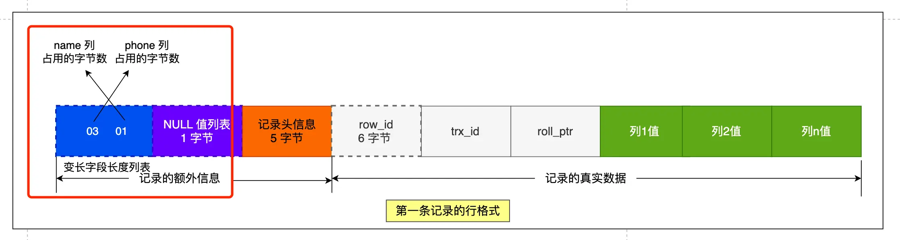
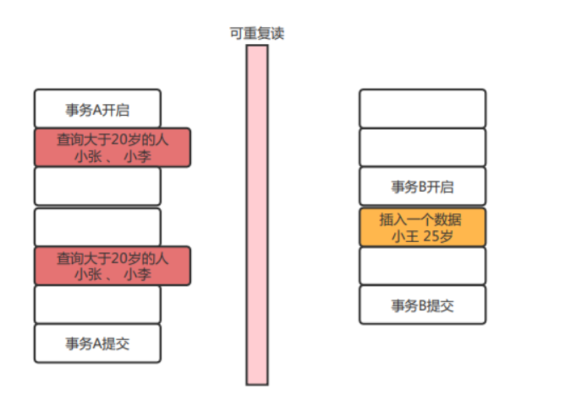

执行一个select语句都发生了什么?
大概流程
一个语句的执行分为两层
server层:建立连接,分析并执行sql具体有 连接器 查询缓存 解析器 预处理器 优化器 执行器
存储引擎层:数据的存储和执行
连接器：建立连接，管理连接，校验用户身份；
查询缓存：查询语句如果命中查询缓存则直接返回，否则继续往下执行。mysql8.0已删除该换块；
解析器： 解析sql,通过解析器对sol查询语句进行词法分析，语法分析，然后构建语法树，方便后续模块读取表名，字 段，语句类型；
执行sql: 执行sql共有三个阶段：
预处理阶段：检查表或字段是否存在；将 select 水 中的 符号扩展为表上的所有列。
优化阶段：基于查询成本的考虑，选择查询成本最小的执行计划；
执行阶段：根据执行计划执行sql查询语句，从存储引擎读取记录，返回给客户端；
连接器:
|
|

command(命令) 指的是用户当前命令状态 sleep指的是连接完就没有执行命令
query 刚查询过 后面的time 是空闲时间 6号用户已经空闲了736秒
空闲连接不会一直占用 mysql定义了最大空闲时间,由wait_timeout参数控制默认值是8小时
超出了这个世界连接器就会自动将它断开.
也可以自己断开连接
|
|
连接限制 用 max_connections 关键字表示 默认的是151 超过这个值就拒绝接下来的连接请求
并报错提示 too many connections
mysql 也和http一样有长短连接的概念区别如下
|
|
但是使用长连接可能会导致占用内存增多，因为MySQL在执行查询过程中临时使用内存管理连接对象，这些连接对象资源只有在连接断开的时候才会释放。如果长连接累计很多，将导致MySQL服务占用内存太大，有可能会被系统强制杀掉，这样就会发生MySQL服务器异常重启现象。
怎样解决长连接占用内存的问题呢？
1.定期断开长连接
2.客户端主动断开连接 客户端在执行完了一个很大的操作后在代码里调用 mysql_reset_connection函数来重置链接，达到释放内存的效果，将链接状态恢复到刚刚创建完成时的状态。
查询缓存
查询缓存就是 接受的一条指令之后先去查询缓存看一下,如果有就直接返回,它保存的形式是key -value key是语句 value 是结果
如果查询缓存没有就去数据库查一下返回并把这个语句和结果存key -value
但是查询缓存命中率太低了,只要表一修改所有的查询缓存就会被清理掉
有点鸡肋所以8.0之后就直接删除了
解析器
解析器只负责检查语法和构建语法树
预处理
检查sql查询语句中的表或者字段是否存在（其他博主扒源码发现的）
将select中的*扩展为表上的所有列
优化器
优化器主要负责将sql查询语句的执行方案确定下来，比如选择使用什么索引
要想知道一条语句使用了什么索引只需要在语句前加上expain命令，结果里面的key字段就是使用了哪个索引
执行器
执行sql语句
一行数据是如何被存储的
mysql的数据存放在哪个文件？
使用命令
|
|
一般是创建数据库就在/var/lib/mysql/ 里创建一个文件夹名字是数据库名
假如说你有创建了一个表 table1 那么立里面就有三个文件
db.opt 放当前数据库的默认字符集和字符校验规则
table1.frm 放表结构信息
table1.ibd 放表数据也被称为独占表空间文件
表空间文件的结构是怎么样的?
表空间由段(segment) 区(extent) 页 (page)行 (row)组成

1行(row)
数据库表中的数据都是按行存放的
2页(page)
数据库读取数据一次io操作是页为单位,一次最少读取一页 16kb
数据表中的行记录是用数据页来管理的
3区(extent)
innodb不是b+树存储数据 每一层都是通过双向链表连接的,如果按照页来分配存储空间那么可能相邻两页物理位置离得很远,查询的时会产生大量随机i/o
所以如果存储大量数据的时候,按照区来分配存储空间 每个区1mb,对于16kb一页的话连续64个页划分为一个区,这样相邻页直接物理地址也是连着的就能使用顺序i/o了
4段(segment)
表是由各个段组成的,段是由多个区组成的 ,段分为
索引段:存放B+树的非叶子节点区的集合
数据段:存放B+树叶子节点区的集合
回滚段:存放的是回滚数据区的集合,mvcc多版本并发控制就是利用了回滚段实现了多版本并发控制
InnoDB行格式有哪些？
InnoDB提供了四种行格式，分别是Redundant ，Compact，Dynamic和Compressed行格式。
5.1会默认使用compact5，7之后默认使用Dynamic
compact行格式长什么样子？

记录的额外信息
包括：
变长字段长度列表
主要是varchar text blob 类型的列所占的大小而且这个是逆序的




为什么是逆序呢？
因为记录头里存的是指向下一个记录头信息的指针 这样通过指针到下一个记录头信息位置
往左读就是记录头信息往右读就是真实数据
每个数据库表的行格式都有变长度字段字节数列表么？
其实变长字段的字节数列表不是必须的。
当数据表没有变长度的时候，比如说全部都是int类型的字段，这时候表里的行格式就不会有变长字段长度列表了，因为没有必要，不如去掉以节省空间
所有变长字段长度列表只出现在数据表有边长字段的时候
null值列表
null值列表必须是整字节1字节8比特所有如果要表示至少表示所以如果要至少要有8列不满8列会自动补0，而且也是逆序表示

注意只有可以为空的列才有这个NULL值列表
记录头的信息
delete_mask:标识这条数据是否被删除 1表示删除
next_record:下一条记录位置
record_type:表示当前记录的类型,0表示普通记录1表示b+树非叶子节点记录,2表示最小记录,3表示最大记录
记录的真实数据
里面除了真实数据还有三个隐藏的字段
row_id:如果不是主键或者唯一约束那么就会有这个row_id用来区分一样的数据 占6字节
trx_id: 事务id,表示这个数据由哪个事务生成的, 占4个字节
rool_pointer, 记录上一个版本的指针
varchar(n)中n最大取值为多少?
行溢出后mysql是怎么处理的？
如果一个数据页存不了一条记录， 录，innodb存储引擎会自动将溢出的数据存放到溢出页中。 compact行格式针对行溢出的处理是这样的：当发生行溢出时，在记录的真实数据处只会保存该列的一部分数据，而把剩余的数据放在溢出页中，然后真实数据处用20字节存储指向溢出页的地址，从而可以找到剩余数据所在的页。 compressed和dynamic这两种格式采用完全的行溢出方式，记录的真实数据处不会存储该列的一部分数据，只存储20个字节的指针来指向溢出页。而实际的数据都存储在溢出页中。
MySQL是怎么知道varchar（）实际占用数据的大小？
MySQL的compact行格式中会用变长字段长度列表存储变长字段实际占用的数据大小
varchar（n）中n的最大取值为多少？
一行记录最大能存储65535字节 5字节的数据，但是这个是包含变长字段字节数列表所占用的字节数和null值列表所占用的字节数。所以，我们在算varchar(n)中n最大值时，需要减去这两个列表所占用的字节数。 如果一张表只有一个varchar(n)字段，且允许为null,字符集为ascii。varchar(n)中n最大取值为65532. 计算公式：65535-变长字段宇节数列表所占用的宇节数-null值列表所占用的字节数三65535-2-1三 65532. 如果有多个字段的话，要保证所有字段的长度+变长字段字节数列表所占用的字节数+null值列表所占用的字节数65535。
索引
索引可以帮助存储引擎快速的查找数据的一种数据结构，形象点说索引就是数据的目录。Mysql 中使用的innoDB 存储引擎，采用最多索引是B+ tree索引。
索引是什么
- 索引就好比书的目录，用于快速查找。
- 一般来说索引本身也很大，不可能全部存储在内存中，因此索引往往存储在磁盘的文件中
- 我们通常所说的索引，包括聚集索引、覆盖索引、组合索引、前缀索引、唯一索引等，没有特别说明，默认都是使用B+树结构组织的索引
索引的分类：
- 按【数据结构】分类：B+tree索引、Hash索引、Full-text索引
- 按【物理储存】分类：聚簇索引（主键索引）、二级索引
- 按【字段特性】分类：主键索引、唯一索引、普通索引、前缀索引
- 按【字段个数】分类：单列索引、联合索引
主键索引
索引列中的值必须是唯一的，不允许有空值。
- 普通索引
- MySQL中基本索引类型，没有什么限制，允许在定义索引的列中插入重复值和空值。
唯一索引
- 索引列中的值必须是唯一的，但是允许为空值。
全文索引
- 只能在文本类型CHAR,VARCHAR,TEXT类型字段上创建全文索引。字段长度比较大时，如果创建普通索引，在进行lke模糊查询时效率比较低，这时可以创建全文索引。MyISAM和InnoDB中都可以使用全文索引。
空间索引
- MySQL在5.7之后的版本支持了空间索引，而且支持OpenGIS几何数据模型。MySQL在空间索引这方面遵循OpenGIs几何数据模型规则。
前缀索引
- 在文本类型如CHAR,VARCHAR,TEXT类列上创建索引时，可以指定索引列的长度，但是数值类型不能指定 在创建表的到时候，InnoDB 存储引擎会根据不同的场景选择不同的列作为索引：
- 有主键，默认会使用主键作为聚簇索引的索引键(key)
- 没有主键，就是选择第一个不包含NULL值的唯一列作为聚簇索引的索引(key)
- 上面两个都没有的情况下，InnoDB 将自动生成一个隐式自增的Id列作为聚簇索引的索引键（key）
聚簇索引
- 也就是主键索引的B+Tree的叶子节点存放的是实际的数据，所有完整的用户记录都存放再主键索引的B+ Tree的叶子节点里面
二级索引
- 也就是辅助索引，B+Tree的叶子节点存放主键值，而不是实际的数据。 所以，再查询的时候如果再二级索引中直接就可以查询到数据，那就不需要回表了，这个过程叫做【索引覆盖】，如果要查询的数据不在二级索引里面，那么就先查询二级索引，找到对应的叶子节点，取出主键，再去主键索引里面查询数据，这个过程就是回表 索引的优势和劣势： 优势：
- 可以提高数据检索的效率，降低数据的IO成本，类似于书的目录
- 通过索引对数据进行排序，降低数据排排序的成本，降低CPU 的消耗
- 被索引的列会自动进行排序，包括【单列索引】 和【组合索引】，只是组合索引的排序要复杂一些
- 如果按照索引列的顺序进行排序，对应order by 语句来说，效率就会提高很多 劣势：
- 索引会占据磁盘空间
- 索引虽然会提高查询数据的效率，但是也会降低更新表的效率，比如每次进行删除和插入的时候，MYSQL不仅要保存数据，还要保存或者更行对应的索引文件
mysql为什么使用B+树作为索引？
因为mysql 的数据要持久化存储在硬盘中，因为硬盘是一个非常慢的存储设备，那么我们就要尽可能少的I/O操作次数内完成。 这一点我们首先想到的可能是二叉搜索树 可是二叉搜索树的存在极端的情况当每一次插入都是最大元素的时候它就会退化成链表查询的时间复杂度变成了O(n) ，现在我们可以想到二叉平衡树对于二叉平衡树，毕竟是二叉的随着数据的增加，树高会增加，而树的高度就决定着I/O的次数，因为数据都储存在硬盘中，对每个几点的访问就是一次I/O那么所以树的高度越高，查询的效率就越低。 这个时候可以考虑不是二叉这样减少了树的高度，就可以提高树的效率，就引入了B树和B+ 树 。
- B+树减少的IO次数 B+ 树的非叶子节点只存储索引，因此在数据相同的情况下，相比既存数据又存储索引的B树，B+ 树会显得更加矮胖， 这样查询的I/O次数就比较少。
- B+树的查询效率更为稳定 B+树的查询效率就是固定为树高O(logn)，还是因为只有叶子节点存储数据。
- B+树的插入和删除的效率高 这是因为B+ 树又大量的冗余节点，这些冗余的索引让B+ 树在插入、删除的效率更高，比如删除节点的时候就不会想B树那样发生复杂的树的变化
- B+树更加适合范围查找 因为B+树的叶子节点使用链表连接起来了，并且是双端链表，有利于范围查找，而B树想实现范围查找，那么只能通过树的遍历来实现。
最左匹配原则 ： 最左前缀匹配原则和联合索引的索引储存结构和检索方式有关。 在组合索引树中，最底层的叶子节点按照第一列a列从左到右递增排列，但是b列和c列是无序的，b列只有在a列值相等的情况下小范围内递增有序，而c列只能在a，b两列相等的情况下小范围内递增有序。 但是如果，查询的条件里面没有a 那么B+ 树就在不知道第一步如何查询了
索引覆盖：
索引覆盖并不是索引的结构，是一种优化手段，当我们使用辅助索引的时候，这样通过辅助索引就可以拿到主键，如果我们还需要通过主键去获取其他数据那么就是【回表】，如果不需要了就可以直接返回这个叶子节点，这就是【索引覆盖】。 索引覆盖提高的效率，因为如果要进行回表就是增加了一倍的查询 覆盖可以3 次IO查询到，不覆盖就要6 次 避免回表 使用索引覆盖，举个例子:现有User表(id(PK),name(key),sex,address,hobby…) 如果在一个场景下， select id,name,sex from user where name=‘zhangsan’;这个语句在业务上频繁使用到，而user表的其他字段使用频率远低于它，在这种情况下，如果我们在建立 name 字段的索引的时候，不是使用单一索引，而是使用联合索引(name，sex)这样的话再执行这个查询语句是不是根据辅助索引查询到的结果就可以获取当前语句的完整数据。这样就可以有效地避免了回表再获取sex的数容 这里就是一个典型的使用覆盖索引的优化策略减少回表的情况。
联合索引 联合索引，在建立联合索引的时候， 尽量在多个单列索引上判断是否可以建立联合索引，联合索引不仅节省空间，还更容易出发索引覆盖，提高查询的效率。 建立联合索引的原则： 区分度 = 不同的数据/这里列种所有的数据 【0-1】 应该将使用最频繁的列、区分度高的列放在前面，频繁使用代表索引的利用率高，也可以在常需要作为查询返回的字段上增加到联合索引中，如果在联合索引上增加一个字段而使用到了覆盖索引，那我建议这种情况下使用联合系引。
索引失效有那些？
MyISAM 存储引擎的B+ 树索引叶子节点存储的是数据的物理地址也就是用户的指针 InnoDB 存储引擎，B+ 树索引的叶子节点保存数据本身，InnoDB存储引擎根据不同的索引类型，叶子几点存放的东西也不一样，对于聚簇索引放的是叶子节点存放的数据，如果是二级索引叶子节点存放的主键的值 索引失效的情况：
- 当我们使用左或者左右模糊匹配的时候，也就是like %xx 或者like %xx% 这两种方式都会导致索引失效
- 当我们查询条件中对索引列使用函数的时候，就会导致索引失效
- 当我们查询条件中对索引列进行表达式计算的时候，也是无法使用索引的
- Mysql 再遇到字符串和数字比较的时候，会默认把字符串转换成数字，这导致查询条件和索引中存的原始数据不一致，就是索引列会发生隐式类型转换，又由于隐式类型转换是由CAST函数来实现的，就等于对索引列使用了函数，所以就会导致索引失效
- 再联合索引中正确的使用最左匹配原则，也就是按照最左优先方式进行索引的匹配，否者就会导致索引失效
- 再Where 子句中，如果使用or 来连接条件，如果存在非索引列那么就会导致索引失效
对索引使用左或者左右模糊匹配
当我们使用左或者左右模糊匹配的时代后，也就是like %xx 或者 like %xx% 这两种方式都会导致索引失效 因为B+ 树索引是按照【索引值】有序排列存储的，只能更具前缀进行比较，如果左边的模糊匹配了就无法进行比较了就导致索引失效了，这样就只能全表查询了
对索引使用函数
有时候我们会用一些Mysql 自带的函数来得到我们想要的结果，这样就要注意了，如果查询条件中队索引使用函数，就会导致索引失效，索引根据索引列的值进行有序储存，当我们使用了函数也就会导致索引列的值改变，我们就无法查询了，例如： 我们对 where year(date_column) = 2023 这里就是对存储日期的date_column 使用year 函数，索引是基于原始的date_column 的原始日期值构建的，而其查询条件是基于函数处理后的结果也就是年份值 在Mysql 8.0 中 对于索引使用函数，就有所不同了 ，如果我们经常执行一些对索引使用函数的情况我们可以建立函数索引， 用刚刚那个例子举例 create index idx_year on user_table(year(date_column)) 这个需要开发人员自行创建
对索引进行表达式计算
这个和对索引进行函数运算道理是一样的，因为索引里面存储的是原始数据，而不是id +2 之后的数据，比如我们查询的条件是where id +2 =10 这样就相当于查询条件变了 ，不能对索引就行表达式计算，可以where = 10 +2 这样是可以的
对索引隐式类型转换
Mysql 的转换规则：例子：select “10” > 9
- Mysql会自动将【字符串】 转换成数字，这个select “10 " > 9 就相当于select 10 > 9 所以在MySQL 中遇到字符串和数字进行比较的时候，会自动把字符串转换成数字，就是因为索引中存储的是原数据，现在我们的字符串变成了整数，这就好比 进行了 cast() 函数一样 从 字符串转换成int 所以我们的比较条件中的索引中不能存储字符串这样在进行查找的时候就会索引失效 ， 理解为就没有对索引就行修改就可以走索引，一旦对索引数据进行修改了就不能查询了，就要走全表了
联合索引最左匹配
对于主键建立的索引叫做聚簇索引，对于普通字段建立的索引叫做二级索引，那么多个普通字段组合在一起创建的索引叫做【联合索引】，也叫组合索引 对于联合索引我们要注意创建时候的顺序。 联合索引要正确的使用需要遵循【最左匹配原则】，也就是最有优先的方式进行索引匹配 比如，船舰了一个索引（a , b, c ）的联合索引，它能匹配的联合索引就是：
- where a= 1;
- where a=1 and b =2 ;
- where a=1 and b= 2 and c =3 ; 这个例子中不适用a 作为条件都是不满足最左匹配的 ，如果是a = 1 and c =2 呢？ 传统的处理方式： 索引下推就是将5.5 中会先找到满足a=1 的数据将这些主键返回到server 层 ，server层会再对这些记录进行 c=2 的筛选，这就增加了不必要的数据传输和server层的处理负担 索引下推优化处理： Mysql 5.6 中索引下推就是会同时判断a =1 和 c =2 这样的记录才会发送给server 这样就减少了传输量，提高了效率，尤其是处理大量数据时的效果更为明显
WHERE 子句中的 OR
再WHERE 子句中，如果OR 的前后如果有一个时非索引列，那么就会导致索引失效，因为，or 时满足一个都行，如果有一个不是索引列我们就要全表扫描
再Mysql中使用 explain + 语句来查看是否语句的状态是否用到索引
事务
事务的定义
Mysql中的事务主要那个用于处理操作量大、复杂度高的数据，比如说，在人员管理系统中，要删除一个人员，即需要删除人员的基本资料，又需要删除和该人员相关的信息，如信箱，文章等等。这样，这些数据库操作语句就构成一个事务!
- 事务是一种机制、一个操作序列，包含了一组数据库操作命令，并且把所有的命令作为一个整体一起向系统提交或者撤回请求，这一组数据是具有原子性的，要么都执行，要么都不执行。
- 事务是一个不可以分割的逻辑单元，在数据库系统上执行并发操作，事务是最小的控制单元
- 事务使用与多用户同时操作数据库系统的场景，如银行、保险公司及整卷交易系统等等。
- 事务是通过事务的整体性保证数据的一致性
事务的特点ACID
- 原子性 意味着事务是一个完整操作，事务的元素是不可以分的，事务中的所有元素必须作为一个整体提交或者回滚，如果事务中的任何元素失败都代表整个事务都失败了
- 一致性 在事务开始之前和事务结束以后，数据库的完整性约束没有被破坏 当事务完成时，数据必须处于一致状态。 在事务开始前，数据库中存储的数据处于一致状态。 在正在进行的事务中，数据可能处于不一致的状态。 当事务成功完成时，数据必须再次回到已知的一致状态， 注意:只有当前三条性质都满足了，才能保证事务的一致性
- 隔离性 在并发的环境中，多个事务同时操作相同的数据时，每一个事务都有独立的完整事务空间 对数据进行修改的所有并发事务是彼此隔离的，表明事务必须是独立的，，它不应以任何方式依赖于或影响其他事务修改数据的事务可在另一个使用相同数据的事务开始之前访问这些数据，或者在另一个使用相同数据的事务结束之后访问这些数据。
- 持久性 一旦事务提交完成之后，事务的效果会永远的保留在数据库中
事务的并发问题
脏读（读取到未提交的数据）
脏读就是在读取数据的时候读取到了，其他事务未进行提交的数据，没有进行提交就意味着这些数据最终可能不会更新到数据中。读取到了不一定最终存在的数据就是脏读
例：比如事务B执行过程中修改了数据X,在未提交前,事务A读取了X,而事务B却回滚了,这样事务A就形成了脏读。 也就是说,当前事务读到的数据是别的事务想要修改成为的但是没有修改成功的数据。
读到已经提交、不可重复读（前后多次读取，读取到不一样的数据）
一个事务进行多次查询却返回了不同的数据。由于其他查询时系统中有其他事务对个数据进行了修改并在A事务结束前提交了，导致多次查询得到的数据是不一样的。
可重复读、幻读（前后多次读取，但是读取到的数据总量不一致）
一个事务对一个表中的数据进行修改，这种修改设计到表中的全部数据行。同时，另一个事务也在修改这个表，这种修改是像表中插入/删除一条数据，那么操作前一个事务的用户会发现表中还有没有修改的数据行，就好像发生了幻觉一样

原因:因为mysal数据库读取数据时，是将数据放入缓存中，当事务B对数据库进行操作:例如删除所有数据且提交时，事务A同样能访问到数据，这就产生了幻读。
问题:解决了可重复读，但是会产生一种问题，错误的读取数据，对于其他事务添加的数据也将访问不到
Mysql的四种隔离级别
read uncommitted（读取尚未提交的数据）
不解决脏读，允许脏读，其他事务只要修改了数据未提交也能读取），即使未提交，本事务也能看到修改后的数据值。也就是可能读取到其他会话中未提交事务修改的数据。
- 安全性差，但性能最好（不使用）
- 三种并发问题都没有解决
read committed （提交读） ： 读取已经提交的数据，可以解决脏读问题
- 只能读取到提交后的数据
- Oralce等多数数据库默认的隔离级别就是提交都
- 安全性较差 ，性能较好
repeatable read（可重复度）：解决脏读，和不可重复读的问题
通过在启动的时候创建一个一致性的试图，这个视图基于事务开始数据库的状态，在事务执行的过程中，它只能看到这个试图里面的数据，而不会看到其他事务未提交或者已经提交的数据
- MySQL默认可重复读
- 无论其他事务是否修改提交的数据，这个事务中看到的数据是始终不会受其他影响的
- 安全性高，但是性能比较差
- 会有幻读的问题
serializable : 串行化： 可以解决脏读、不可重复度、幻读
- 相当于锁表
- 完全串行化的读，每次都读都需要获得表级共享锁，读写互相都会阻塞
- 安全性高、性能差
事务隔离级别的作用范围为两种 - 全局级：对所有会话有效
- 会话级：只对当前的会话有效
Mysql InnoDB 引擎的默认隔离界别虽然是【可重复读】，但是他很大程度上避免了幻读现象，解决的方案有两种：
- 针对快照读，通过MVCC 方式解决了幻读，因为可重复读隔离级别下，事务执行过程中看到的数据，一直跟这个事务启动看到的数据是一致的，即使中途其他事务插入了一条数据，是查询不出来的，所以就很好的避免了幻读问题
- 针对当前读，通过next -ke lock （记录锁+ 间隙锁） 方式解决了幻读，因为当执行select … for update 语句的时候 ， 会加上net-key lock ， 如果又其他事务再net-key lock锁范围内插入数据，那么这个插入语句会被阻塞的，无法插入成功，所以就很好的避免幻读问题
四种隔离界别是如何实现的？
- 对于【读未提交】隔离级别来说，因为可以读取到未提交事务修改的数据，只要我们再读的时候读取最新的数据就好了
- 对于【串行化】隔离级别来说，通过读写锁的方式来避免并行访问
- 对于【提交读】和【可重复读】都是基于MVCC机制，InnoDB提供视图二者的区别就是提交读可以读取到其他事务提交后的数据，而可重复读是只能看到该事务开始时创建的视图。 执行【开始事务】命令，并不意味着启动事务，在MYSQL中有两种开始事务的命令，分别是：
- begin/start transaction 命令 从第一条select 语句开始
- start transaction with consisitent snapshot 命令 专门用于创建一个非常明确的一致性快照 立刻启动事务
Read View 在 MVCC里如何工作的？
基于MVCC多版本控制 Read View 有四个重要的字段：
- m_ids: 指的时在创建Read View 时，当数据库中【活跃事务】的事务id 列表，注意是一个列表，其中活跃事务就是启动了，还没有提交的事务，就是运行中的事务
- min_trx_id ： 指在创建Read View 时，当前数据库中m_ids 列表中的id 最小的事务，也就是m_ids 的最小值
- max_trx_id : 这个并不是m_ids的最大值，而是创建Read View 时当前数据库中给下一个id 值，也就是全局事务中的最大值 +1
- creator_trx_id ： 指的时创建该Read View 的事务的事务id
当使用InnoDB 存储引擎的数据库表，它的聚簇索引记录中包含下面两个隐藏列： - trx_id ，当一个事务对聚簇索引记录进行改动的时候，就会把该事务的id 记录在 trx_id 隐藏列里面
- roll_pointer ，每次对某条聚簇索引记录进行改动的时候，都会把旧版本的记录写入到undo 日志中，然后这个隐藏列指针，指向每一个旧版本记录，于是就可以通过它找到修改前的记录 当一个事务去访问记录的时候，除了自己更新的记总是可见之外，还有这几种情况：
- 如果记录的trx_id 指 小于 Read View中的min_trx_id 就代表当前查看记录的版本是其他事务已经提交过的，版本，在可重复读的隔离界别下，我们查看记录的版本是我们事务开始的时候拍摄的一致性快照里面的数据，说明其他这个版本的数据我们是可见的
- 如果trx_id 在min_trx_id 和 max_trx_id 之间要进行判断这个trx_id 是否在m_ids 列表中
如果在就代表就代表是活跃事务的版本我们是不可见的
如果不在代表是其他事务已经提交过了的版本我们是可见的 - 如果trx_id 大于max_trx_id 代表整个版本的记录实在我们创建视图之后的事务生成的整个版本对于我们来说是不可见的 。 大部分这样的情况可以通过 roll_pointer 【回滚指针】去查看旧版本的数据